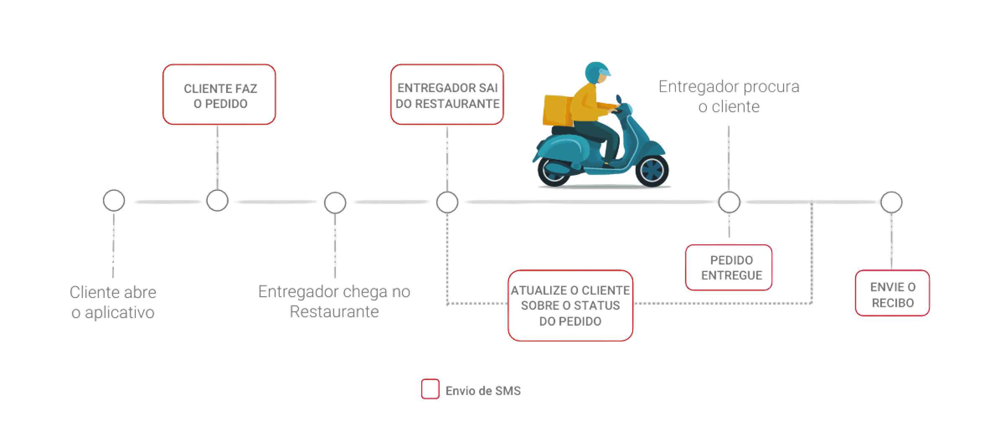

É muito provável que você já tenha recebido uma mensagem de texto de uma empresa ou organização.
Com uma API, qualquer empresa pode enviar mensagens de texto e impactar clientes, prospects ou fornecedores como parte de seu processo comercial.
Com essa ferramenta você envia mensagens de SMS com as informações que o seu cliente precisa e com a segurança, a velocidade e a confiabilidade que você espera.
SMS é a forma mais rápida, eficiente e de baixo custo para se comunicar com seus clientes.
98% de taxa de abertura
90% dos SMS são lidos em até 3 minutos.
80% das pessoas interagem com SMS comerciais.
35x maior a probabilidade de um cliente abrir um SMS do que um e-mail.
O que é?
Ofereça uma melhor experiência ao cliente acompanhando a sua jornada de compra.

Benefícios
Comunicação efetiva, rápida e escalável;
Baixo custo;
Alta taxa de entrega e leitura;
Personalização de data, hora e conteúdo;
Agendamento de campanhas;
Interação bidirecional: recebimento de respostas;
Plataforma user-friendly;
Acompanhamento de métricas e relatórios.
Usos
São muitos os caso de uso, mas veja alguns exemplos: